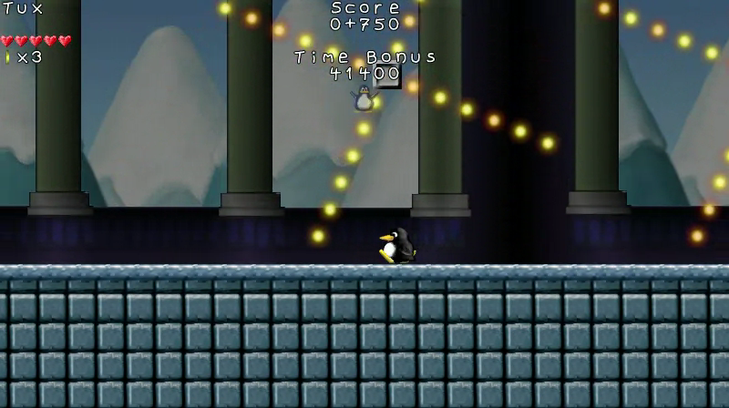
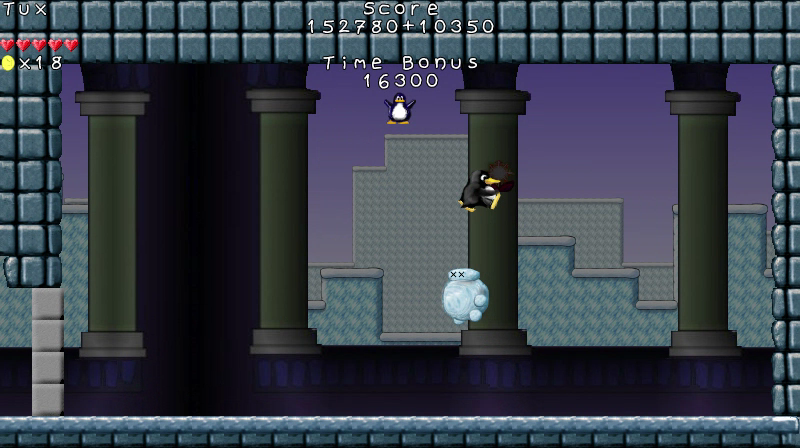
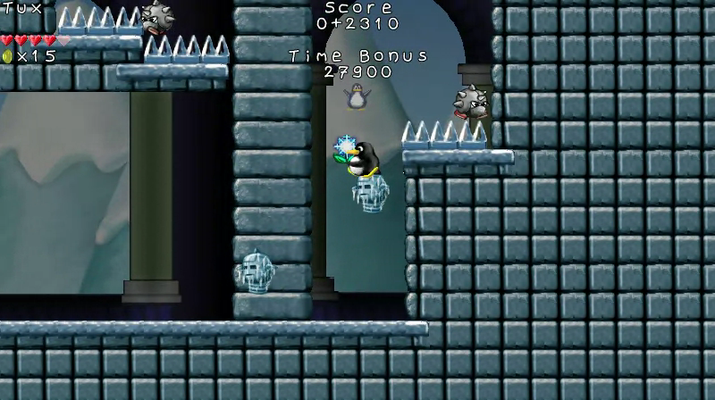
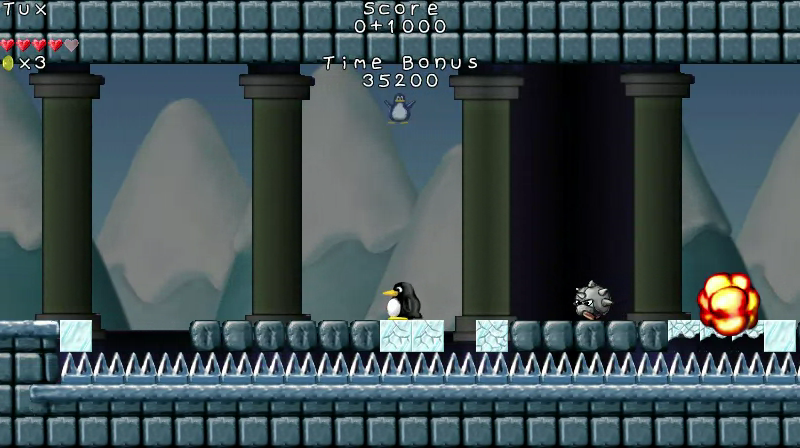
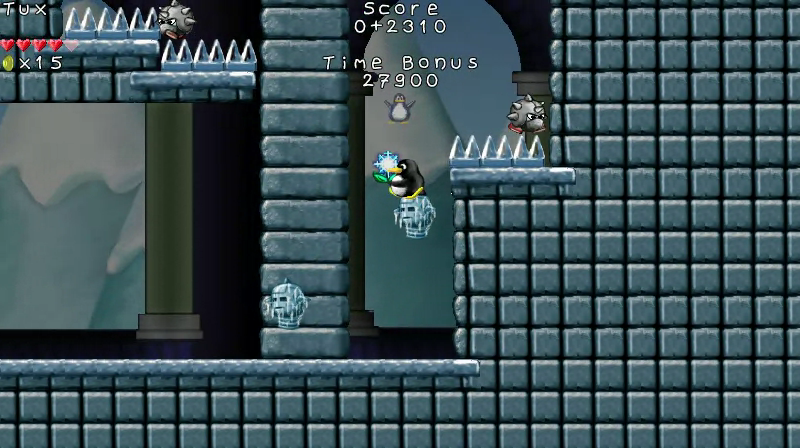
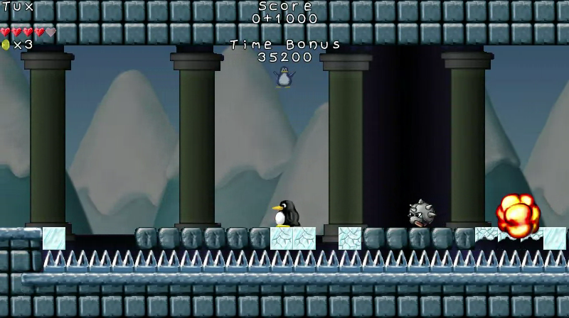
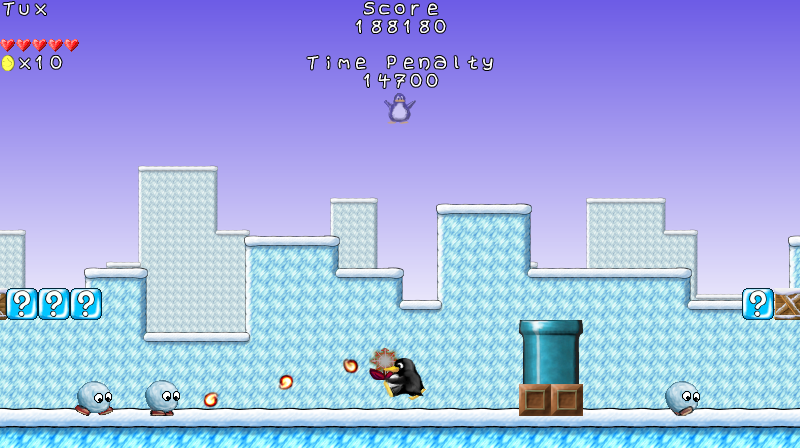
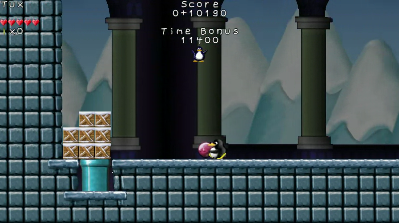
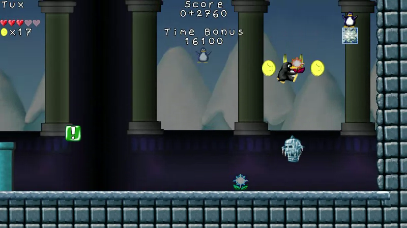

reTux
| Genre: | Action |
|---|---|
| Perspective: | Side-scrolling |
| Players: | 1 |
| License: | GNU GPLv3+ |
{kind=link}
{kind=link}
{kind=link}
{kind=link}
{kind=link}

{kind=link}
{kind=link}
 
{kind=link}
{kind=link}

{kind=link}
{kind=link}
{kind=link}
ReTux is an action platformer loosely inspired by the Mario games, utilizing the art assets from the SuperTux project. The name "ReTux" is a play on the words "redux" and "Tux".
Although ReTux re-uses the art assets of SuperTux, no code from SuperTux is used in ReTux. The software portion of ReTux is entirely new, written in Python and based on the SGE Game Engine. ReTux also has several distinctions in its gameplay compared to both SuperTux and the Mario games, most of which are made apparent by these gameplay videos:
- https://goblinrefuge.com/mediagoblin/u/onpon4/m/retux-world-1-gameplay/
- https://goblinrefuge.com/mediagoblin/u/onpon4/m/retux-concept-castle/
The story of ReTux is not finalized yet. Basically, it's going to be something about the snow people, led by Raccot the yeti, taking over Icy Island.
ReTux is my first game that I am trying to commercialize. The way I initially attempted to do this was with crowdfunding on IndieGoGo, which I was attempting to use as a way to sell the game to the public. The campaign failed, so ReTux has currently only been made available for those who contributed $20 or more to the campaign, and it will be made available to non-backers for a fee (much like most commercial games, but without the usual copyright restrictions) when it is finished.
Download
These files are encrypted 7z archives. You need a program such as 7-zip to extract them. You also need the password to decrypt them, which I have only given to backers who contributed $20 or more to the IndieGoGo campaign.